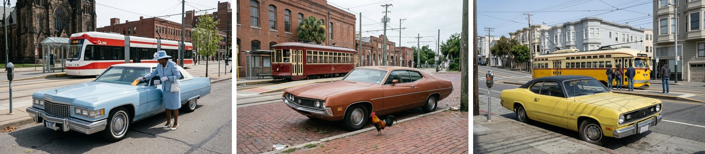

Boson, an open-source studio floor for ComfyUI · Comfy Open Source Higgsfield challenge, Oct. 2026
Every picture a model makes rests on judgments nobody asked it to make: which car, which road, which hour of light. Those judgments live in the weights, and closed platforms sell them back as presets. Boson ports such a platform to ComfyUI and hands each judgment back to the owner. What is new is the whole idea: studios instead of presets, each a folder of plain files in git that holds a taste; a curation loop, where red and green dots and one sentence become a rule the next round must read, so taste builds up with a history; a scene editor, where every piece is a slot any studio can fill and a swap redraws and relights only what changed; ordinary ComfyUI graphs that pause for judgment, replay for free and put any model behind one switch; and models used for their strengths, local and cloud, the owner's feedback choosing.
Ask a language model for its favourite country and it will probably say Japan. A 2026 study found that when models must pick a place themselves, their answers collapse onto a few countries, with Japan first for six of eight frontier models, and that the collapse happens in fine-tuning, not in pretraining (Fernandez de Landa et al., "Why are all LLMs Obsessed with Japanese Culture?", arXiv:2604.21751). The preference is trained into the weights. Telling a model to avoid the obvious answer does not make it scatter. In our own pre-registered experiment (2026; write-up to follow), a model that had named its habit almost perfectly stepped off it in 59 of 60 judgments, then landed on a new shared answer instead: the Netherlands, in 12 of 20 sessions. Typefaces and page layouts behaved the same way: the pattern holds wherever a model makes a call of taste.
Pictures are no exception. Boson's first round with a new owner shows it (Figure 1). Given only "Architecture photography.", the image model drew glossy waterfront landmarks at golden hour, close to the picture the writer model had named, beforehand, as the default. Told to avoid that default, the writer chose a worn concrete housing block with laundry on the balconies, and both draws came out nearly identical. The dodge is a default too. Cars repeated it.
Each Boson part is a ComfyUI node or a small tool beside one; every action in the sidebar sets widgets on real nodes, one toggle away from the canvas.
| Higgsfield (closed) | Boson (open) | What changes |
|---|---|---|
| Soul Moodboards: a style preset from up to 80 pictures | Forge Studio | The result is a git repo of plain files you can read, edit, branch and share, not a hidden code |
| Soul ID, Character Swap | Cast | One identity across shots (held in 8 of 8 test scenes) |
| Marketing Studio: 1,051 templates, 500+ apps | Studios | Made from the owner's references and verdicts, not picked off a shelf |
| Edit, Layers, Outfit Swap | Scenes: Locate, Slot Crop, Swap | Change one thing, keep the rest: any studio fills any slot, the frame relit; every swap is a commit you can undo (Fig. 3) |
| Cinema Studio | Commit Clip, Load Clip | A take becomes a 6 s clip through a Comfy partner video node, stored with it (LTX 2.5 Pro $1.46, Omni Flash $1.31) |
No studio names a model, so each task can go to the model best at it. A backend widget sets the
renderer to Nano Banana 2.1 (closed; Gemini key or Comfy partner API) or FLUX 3 Klein in a local ComfyUI (open
weights); writer and Locate on Claude and Gemini or a local Qwen3.8. Next: a fan-out test of each model on each
task, the owner's dots picking.
Boson has no taste of its own. It sends each call of taste to one of three outside judges and records which decided:
The owner. Green and red dots on a round, plus one sentence of verdict. The ledger. The studio's git history: STUDIO.md, the pinned pictures, every verdict word for word. The next make must read it, and overriding a past verdict is a logged commit, never a silent reset. Noise. When the owner has nothing yet, a seed number picks the starting references, on record.
Agents gather candidates and write briefs; they never issue a verdict. The ignition round in Figure 1 is how a
studio starts from zero: before the owner has a single reference or dot, one blind round shows where the weights
would land and what declared noise offers instead. The owner's dots pick the starting references, and the round
is committed into the new studio as IGNITION.json. A green dot on the default is a fair answer: the owner's call, now on record.
A generational tool. A preset stays the same. A studio builds a history: every round, verdict and pin is a commit that can be branched, forked from an earlier round, or handed to someone else. The history outlives any one model.
The owner's sovereignty. Taste kept as plain files in the owner's own repository, the way coding agents already keep their memory in CLAUDE.md and AGENTS.md. Local models plug in behind one widget. A fresh clone replays a studio's rounds in about 11 seconds with no keys and no network calls.
Ownership through curation. What the studio makes is steered by what the owner picked and said: their references, dots and sentences. That record is the authorship trail.
Verdicts visibly bound the next round in the posters, architecture and cars studios. Cars: after the first round the owner wrote "These cars look to "foreign" and need to feel more like american classics", and every car in round two was a 1970s American classic, six of six dotted green (Figure 2). Posters went from "limited to primary colors" to maroon, salmon and teal. Architecture went from "bland, like as if in a soviet nation" to designed contemporary blocks, then to deep facades, six of six green. Cars cost $3.29 for two rounds, architecture $4.22 for three.

The limits, plainly. Layouts repeat inside a studio. A loop that obeys every verdict can narrow toward the owner's own average; the way out is a branch (a fresh seed, a fork from an earlier round), not a gate. A round of pure praise gives the next round nothing to act on. The shipped studios and scene used closed models (Nano Banana, Claude, Gemini); a round by Qwen3.8 and FLUX 3 Klein on one RTX 4090 (its studio set up by Opus) stayed on the machine but took ~17 min to the cloud's 2.5; clips need the cloud. None of this replaces the owner. That is the design. Made, not preset.
59 of 60 and the Netherlands: our pre-registered experiment, September 2026, three models (one frontier, two open-weights); write-up to follow. Higgsfield names and counts: its public site, October 2026. Figures are Boson's own renders; no reference photograph is reproduced.